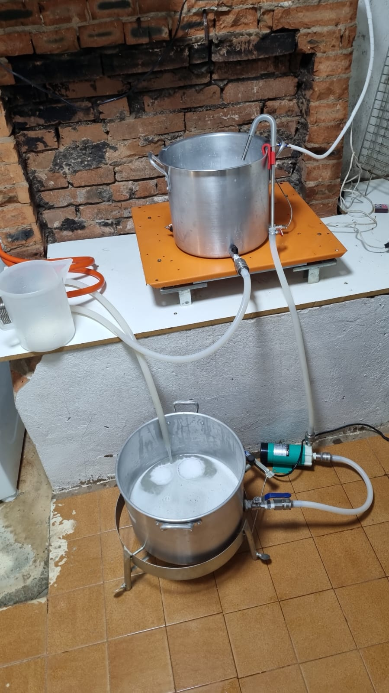
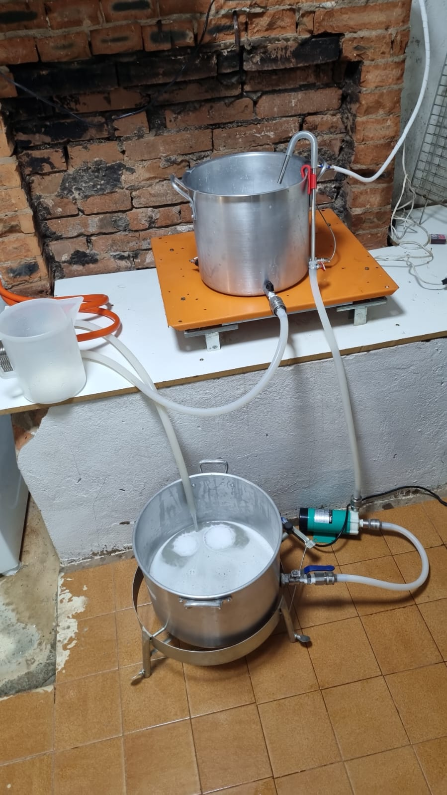

Meus hobbies e atividades
- Programação e desenvolvimento de Sistemas Embarcados
- Leitura de livros técnicos e ficção científica
- Viajar
- Esportes radicais
- Heavy Metal
Para minha formação, clique no botão Currículo Lattes no menu acima
 

Para minha formação, clique no botão Currículo Lattes no menu acima